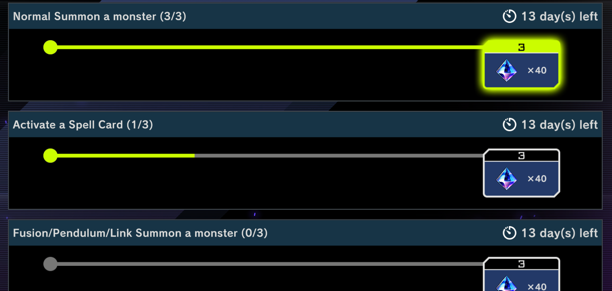
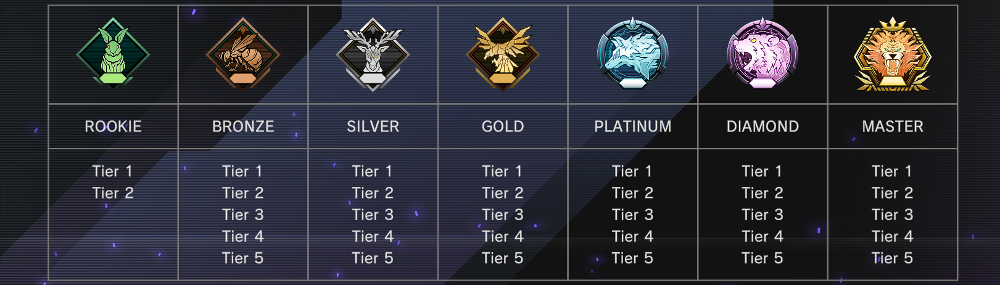

Almost every thread talking about how to approach dailies will have (possibly multiple) users recommending doing three select quests every day, and only collecting the remaining six at the end of the month. This is poorly thought out advice, and there is a way to keep up with the game's economy while investing significantly less time.
How dailies work#

There are nine possible daily missions in Master Duel:
- Special Summon a monster (0/5)
- Normal Summon a monster (0/3)
- Activate a Spell Card (0/3)
- Activate a Trap Card (0/2)
- Destroy a card (0/5)
- Win a Duel (0/1)
- Fusion/Pendulum/Link Summon a monster (0/3)
- Ritual/Synchro/Xyz Summon a monster (0/3)
- Duel in Solo Mode (0/3)
Each worth 40 gems. The daily quests have changed once or twice since launch, so I can only guarantee these to be accurate as of this page's last update. You can only make progress on quests from completing duels in Ranked/Events, except of course for the solo daily. Surrendering does not give progress, nor does playing in Casual.
Each day at the global reset (6 PM GMT), you randomly get three of the nine daily missions added to their queue, and can make progress on them. Even if the quests are not completed, on the following day, you'll get three additional missions not among those still in your queue. However, if you have seven or more unfinished daily missions, you can only get missions up to the cap of nine, with one copy of each.
At the end of each month, all unfinished/unclaimed daily missions expire and you start again from a blank slate.
General optimization#

At the end of each month, you are placed in the bottom of the previous rank tier. For example, Master 1 deranks to Diamond 5, Master 3 also to Diamond 5, and Platinum 5 to Gold 5. You should always end at the top level of a rank category to maximize rank-up gems (getting you the 5>4, 4>3, 3>2, and 2>1 rank-up gems). If you've climbed to Diamond 1, for example, and there are a few days left in the month, you might want to forfeit a few games to drop to Diamond 2 and avoid the risk of ranking up to Master 5.
You have to log in for the daily missions to be assigned, so even if you aren't planning on dueling it's optimal to briefly show up. You can also get 20-50 gems/day just from logging in, 5 for starting to watch a replay (you can leave immediately), gems for ranking up/playing in events, and sometimes a random extra amount on completion of a game.
For the Solo mission, I believe the current best one to be Training & Challenges > Duel Restart > the first Practice. This mission completes quickly and does not require much menuing/interaction.
Daily quest management#
In general, if you want to earn the most gems, the answer is simple: play more, especially during events. Every game played increases your chance of duel reward gems, and you get a bit more rank-up gems in Diamond/Master ranks. (Compared to Bronze-Platinum, playing through Diamond adds 250 gems/month and Master adds 500 gems/month.) This is all rather obvious, so instead I'll cover low-effort strategies: that is, optimizing gems earned while playing less.
People often recommend completing the six hardest daily missions, not claiming them, causing following daily refreshes to always pull the same three quests. Each day you would only have to do the three easiest daily missions, and can claim the other six at the end of the month. For example, if you're playing Unchained, you might choose to keep Special Summon (x/5), Destroy (x/5), and Win (x/1). These are most likely to be accomplished during your combo, while things like activating traps will be harder if your opponent surrenders midway through.
However, this is not a particularly good strategy. Its main weaknesses are, from my point of view:
- Not all decks have easy access to three missions. For example, Voiceless Voice typically places Barrier via Lo, does not necessarily use a Spell to Ritual Summon at all, often just Ritual Summons once without ED access, and may only Special Summon twice. So, however you divide the missions, you may have to play multiple games each day to complete the three selected remaining quests. The Millennium archetype is even worse, if played pure: it almost never Normal Summons, usually only activates two Spells per turn, and Ankh technically does not count as Fusion Summoning. It does better if you get some extra time to resolve Fires of Rage, but there are plenty of opportunities for your opponent to interrupt before then.
- You must play game(s) every day.
- You cannot use the "claim all" button until the end of the month, forcing annoying item-by-item collection of your standard dailies/event quest gems.
A better approach
Instead, you can follow a slightly different rule: log in every day for dailies/login bonuses to register, but play games when you have seven or more active daily missions and play until you have less than that many, claiming completed quests. (For example, on the first day of the month, you can just log in and let the three initial dailies sit. Same on the second day. Then on the third day, you'll have all nine missions available, and only need to play until any three of them complete.) Exactly how much gameplay this involves depends on your deck, rank, and chance, but it's on the range of one game every other day. This is 2-4 times fewer duels needed than the previous strategy.
With a mostly full queue of unfinished missions, you can make partial progress on five to eight of the missions with one game (depending on the deck and circumstances). After a game or two to get to six or less in the queue, the next day, you'll have the fresh missions plus partial progress on some of the leftovers, and only need to complete three from that entire set: much easier than completing three quests exactly among the fresh missions.
At the end of the month, just play a few extra games to clear out the mission log. You may want to have a backup deck or two that covers your less-used summoning mechanics.
This method is not perfect, of course:
- You must play a little more at the end of the month, or skip this and lose a few daily quests worth of gems.
- This level of gameplay is not sufficient to get most of the gems in monthly events, nor can you maintain a particularly high rank long-term. If you want more event/rank gems, you will have to play extra games in them from time to time.
I don't see these as major problems, as you save much more time throughout the month overall. And if the chance of losing ~100 gems/month disturbs you that much, you might want to consider stepping back from gacha games in general (or, conversely, playing more actively and ranking up to Diamond+).
Notes#
Master Duel, as a gacha-style game, largely relies on exploiting people's gambling addictions, fear of missing out, routine formation, and/or addictive behaviors. Optimizing gem income should not come as a priority over other areas in life, and I appreciate that you do not have to play multiple games each day to earn almost all of the standard F2P-available gems. While this decision is ultimately up to each player, I also cannot recommend buying gems. The rates Master Duel charges are extortionate, and as long as you log in consistently and aren't reckless with your spending, you should be able to keep up with the metagame and build a variety of decks.